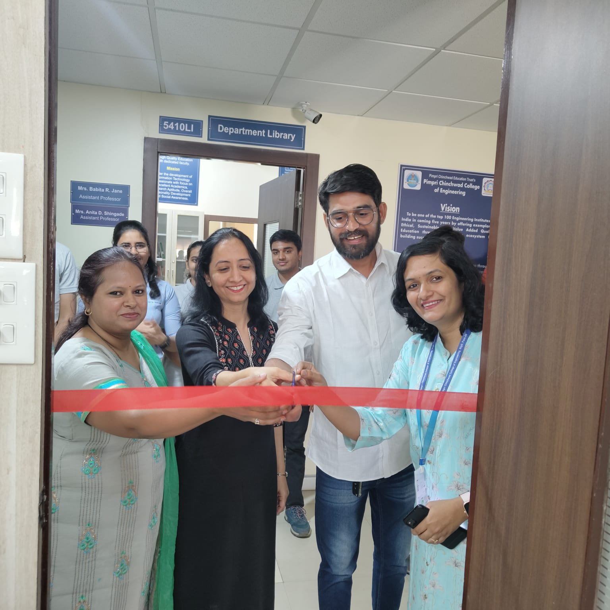

DEVOPS CENTER OF EXCELLENCE (DCOE)
Department of Information Technology, Pimpri chinchwad College of Engineering has initiated to build Centre of Excellence (COE) in DevOps (today’s methodology in Automation Technologies) with an objective of developing industry institute partnership in the field of Automation in Software Development as well as to bridge technology gaps between industry and academia to foster research and knowledge among the students at PCCOE. DevOps is transforming how IT teams approach software. DevOps Center of Excellence (CoE) can help your organization maximize the potential of DevOps. The importance of CoE is to significantly enhance the ability of an organization to meet or exceed the goals that the center supports. An institute can reach its full potential when it focuses successfully on specific projects goals. The existence and effective functioning of the center of excellence is an essential instrument obtain specific results in wide variety of areas. As is known to all the stakeholders, there is a gap between industry and academia. The Centre of Excellence strives to fill this gap by conducting industry and job oriented courses and by providing training to place the students as per their preferred interests and industry choices.
ABOUT DCOE

The Inauguration of Center of Excellence DevOps was held on 25 th February 2023. The center of excellence is inaugurated by Resource Person Mr. Jayant Hinge, (Senior DevOps Engineer , Spectris PLC, Pune), Dr. Sonali Patil (Head of Department , IT), Dr. Jayashree Katti (Assosicate Professor , IT), Mrs. Radha Deoghare (Assistant Professor, IT). This centre will act as a place to educate DevOps Automation tools for CI/CD like Jenkins, GitHub, GitHub Action, AWS, Docker, Kubernetes ,Terraform , Ansible , Chef, Puppet, Sonarqube , Maven etc I to students with focus on Training, Knowledge transfer for current IT needs. These center will improve employability with latest skill sets and provide opportunities for developing software base d on advance technology like a CI/CD.
MORE ABOUT DCOE
- To study basics of DevOps
- To know the various tools uses in DevOps
- Helps to run project using DevOps practices.
- To develop engineering professionals equipped with next generation technologies.
- To provide platform to students to interact with industry experts.
- Students understand the high-level purpose, terminology and architecture of DevOps pipelines
- Students can use code repositories
- Students can use technologies for automating the management of infrastructure
- Students can use container technology
- Students can understand orchestration technologies for automating DevOps pipelines
- To conduct high Quality Training with special focus on emerging technologies in DevOps like Jenkins , JUnit, Docker, Kubernetes.
- To develop association between academia and industry for the benefit of the skill development sector.
- To upgrade the Centre’s technical capacity
- Focuses on enabling software practitioners to combine the management of software development with infrastructure/operations practices.
- DevOps integrates development and operations practices through the use of tools, practices, and automation of those practices in order to streamline the development and delivery of software.
- DevOps includes a wide variety of practices encompassing coding, testing, configuration management, integration, packaging, deployment, and monitoring.
- This CoE proposes a solution to utilizing DevOps technology in the classroom by providing a supporting system